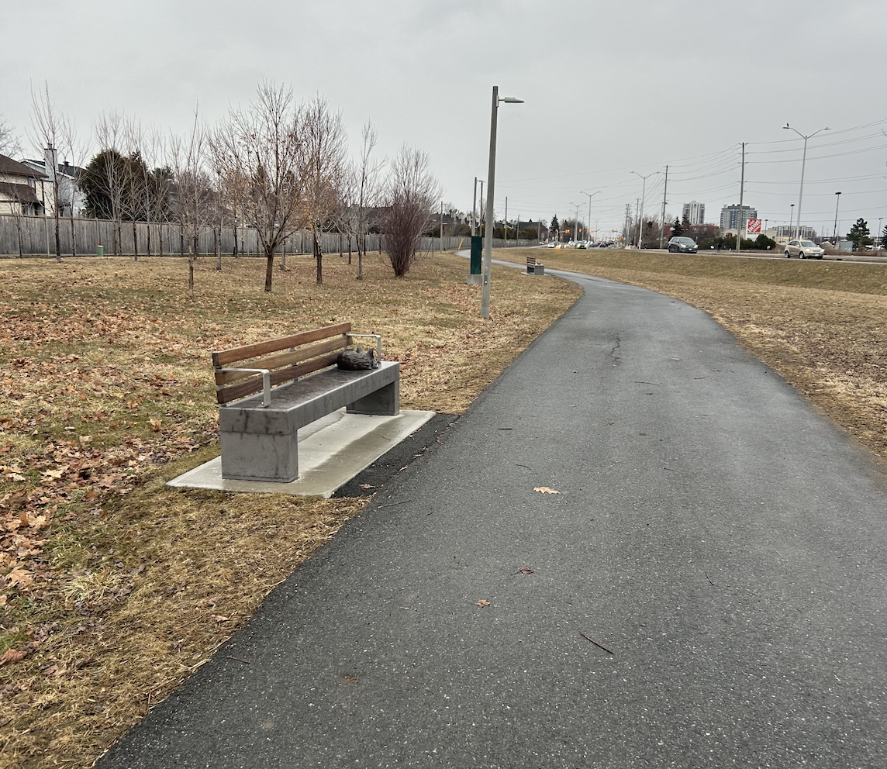

Set within the suburban heart of Barrhaven, A State of Rest occupies a space where residential life, public infrastructure, and natural imagery converge. The installation is located along Strandherd Drive, a major arterial road in Ottawa’s rapidly growing southwest district. This thoroughfare, busy with vehicular traffic and lined with pedestrian pathways, offers a unique stage for public engagement.
Where the City Passes by
Three of the four sculptures—the fox, fawn, and squirrel—are placed directly along a wide pedestrian walkway that borders Strandherd Drive. These benches face outward toward the road, turning the artwork into both a public spectacle and a private moment of reflection. During a site visit, even in the middle of a snowy, windy day, the area remained active: residents walked their dogs, children played nearby, and commuters passed by, glancing at the quietly resting creatures.

Walking up to the Fox Bench with the Squirrel Bench and Strandherd Drive in the background
View of Strandherd Drive while sitting on the Bench with the Fox
Walking up to the Fawn bench
Pedestrian sitting on Fawn Bench
An Integrated pause
The visibility of the main cluster of benches transforms them into urban landmarks—accessible, ever-present, and part of the neighbourhood’s daily rhythm. This deliberate integration into everyday life supports Vickerd's message of shared space and coexistence. The peaceful stances of the animals, lying undisturbed amid the hum of city life, suggest a moment of pause within the rush—a rare stillness in an ever-moving environment.
View across the street from the fawn's bench, revealing the busy arterial road that frames the installation. The contrast between the sculpture’s quiet repose and the constant movement of traffic underscores the tension between natural calm and urban activity.